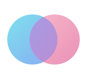

Referenzbild 3

01 · Gefüllte Überlagerung
Überlagerung
Zwei farbige Kreise schaffen eine sichtbar gemeinsame violette Mitte.
WirkungSanft, vertraut, ruhig; nah am Bild mit den transparenten Kreisen.
PrüfenSchnittfläche und Abstand bei 16 px.